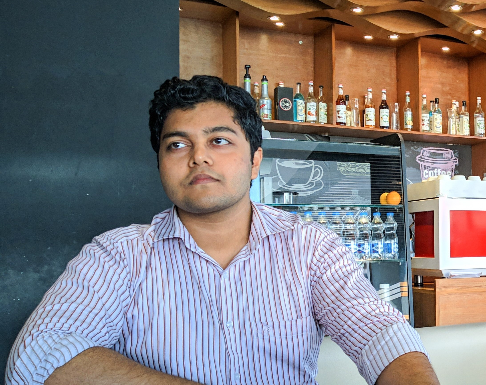

....

Tanvir Hossain Uthsho
Full stack web developer


Profile
Progressively evolve cross-platform ideas before impactful
infomediaries. Energistically
visualize tactical initiatives
before cross-media catalysts for change.
Skills
Web Design
Assertively exploit wireless initiatives rather than synergistic
core competencies.
Java Language
I have good command in Java programing language.
C Language
My First Learning Programming Language is C.
Verbal & Writing
I am Fluent in English, both verbal and Writing.
Education
Bsc in Computer scince and Engineer
NorthSouth University
Academic Accomplishments
• Shark Tank Speaker in Florida Automated Vehicle (FAV) Summit, 2019.
• Reviewer of IEEE Intelligent Transportation Systems Conference 2020
• Presented a Poster in Florida Automated Vehicle (FAV) Summit, 2019.
CAREER OBJECTIVE
Passionate and enthusiastic individual having knowledge in traffic operation, management and safety looking to obtain a position in Transportation Engineering where my skills will be enhanced and utilized.
EXPERIENCE
Florida Atlantic University | GRADUATE RESEARCH ASSISTANT
Aug 2019 – Present
Projects
Impact of dedicated lanes for ACC on freeway capacity and the process of lane changing to enter and exit the ACC lane could impact capacity (FDOT) (Aug 2020-Present)
-
Managed lanes for ACC on freeway
- Merge bottleneck with on-ramp demand
- Collect trajectory data for fuel consumption analysis
Experiment of Capacity Drop Using ACC (Feb 2020-Present)
- Comparison with simulation of ACC and human drivers.
- Building the network
Micro and Macro Analysis using Aimsun
Experiment of Capacity Drop Using ACC (Feb 2020-Present)
GRADUATE TEACHING ASSISTANT
Department of Computer Science and Engineer | Aug 2019 – Dec 2019 Instructor- Teaching Aimsun to undergraduate students in “Intro to Transportation Engineering” course.
...